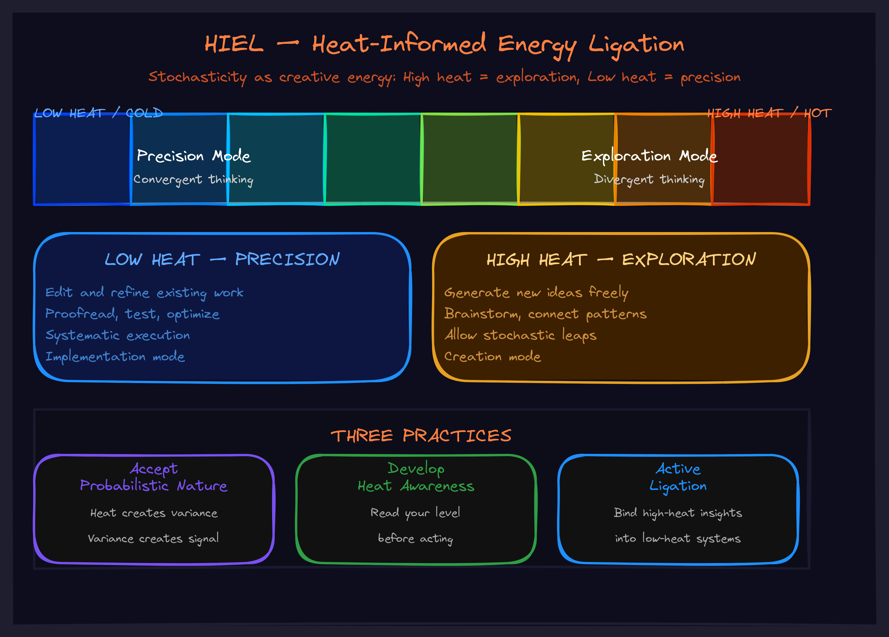

May 2026Level 6 · ConcentrationThe operator
HIEL: Your AI Is a Heat Engine — Stop Treating It Like a Calculator
The randomness in AI outputs is not a bug. It is energy. The question is whether you are harnessing it or letting it scatter.

The Frustration That Reveals the Misunderstanding
You give your AI the same prompt twice and get two different answers. You run the same analysis again and the structure shifts. You ask it to brainstorm and get brilliance mixed with nonsense.
Your instinct is to clamp down. Set temperature to zero. Use greedy decoding. Force the machine to be deterministic — because deterministic means reliable, right?
Wrong. You just killed the engine.
What you are experiencing is not a flaw in the technology. It is the technology working exactly as designed. LLMs are fundamentally probabilistic. Every token is sampled from a distribution. Every response is one draw from a space of possible responses. The variability you are trying to eliminate is not noise — it is heat.
And heat is energy.
The Thermodynamic Reframe
In physics, heat is energy associated with random molecular motion. It can dissipate systems — scatter molecules, break structures, increase entropy. But it can also drive engines. The entire industrial revolution was built on one insight: you do not eliminate heat. You channel it.
LLM stochasticity works exactly the same way.
High heat — high temperature, diverse sampling — produces exploratory outputs. Novel connections. Unexpected framings. Ideas that come from "left field." This is where creativity lives. This is where the AI produces things you never would have thought of yourself.
Low heat — low temperature, constrained sampling — produces precise outputs. Consistent formatting. Faithful execution. Adherence to established patterns. This is where reliability lives.
The problem is not heat. The problem is unmanaged heat. When nobody is watching the temperature, when nobody is channeling the energy, the heat scatters. You get drift. Hallucination. Incoherence. Not because the AI is broken, but because you left the engine running with no one at the controls.
HIEL: Heat-Informed Energy Ligation
HIEL is the operational doctrine for working with probabilistic intelligence rather than pretending it is deterministic.
The name encodes the practice. Heat-Informed means you are aware of the stochasticity and its effects. You can sense when the AI is running hot — generating diverse, exploratory outputs — versus running cool — producing consistent, constrained responses. You match the heat level to the task. Energy Ligation means you are actively binding that heat into productive work. In biochemistry, ligase enzymes catalyze the joining of molecules into larger structures. In HIEL, you are the ligase. You take the raw stochastic output and bind it into coherent, useful frameworks.
This is not passive consumption. You do not just read what the AI produces and decide thumbs-up or thumbs-down. You shape it. You identify what is valuable in the variability. You correct what drifted. You combine elements from different outputs into unified structures. You formalize patterns by naming them.
Every framework worth using was produced this way. The AI generated the raw material. A human performed the ligation. Together, they bound the heat into structures that neither could have produced alone.
The Three Practices
1. Accept That Your AI Is Probabilistic
This sounds obvious. It is not. Most people interact with AI as if it were a search engine that sometimes gets confused. They expect the same input to produce the same output. When it does not, they blame the model or their prompt.
The shift is to stop expecting determinism from a probabilistic system. The question is not "how do I get the same answer every time?" The question is "how do I harness the variability productively?"
Once you make this shift, your relationship to AI outputs changes fundamentally. Variable outputs stop being frustrating failures and start being exploration of a solution space.
2. Develop Heat Awareness
Start noticing the temperature of AI outputs. After enough cycles, you develop an intuition for it:
Which responses feel exploratory — novel combinations, unexpected analogies, ideas from domains you did not mention? Those are hot outputs. Which responses feel predictable — expected patterns, standard formulations, the obvious next step? Those are cool outputs. Which responses drift into territory that seems confused or unrelated? That is heat scattering.
Make the perception explicit. "This response is running hot because it connected X to Y in a way I did not expect." "This response is cool — it gave me exactly the standard approach." The act of noticing is the first half of HIEL.
3. Practice Active Ligation
When you get hot outputs, do not just accept or reject them. Work with them:
Identify ligation candidates — unexpected connections that link domains, novel framings that recast your problem, patterns that recur across multiple outputs.
Shape them — correct incoherencies while preserving the insight, combine elements from different outputs, formalize by naming and describing.
Verify the binding — can you explain the result clearly? Does it generate useful predictions? Does it connect to existing knowledge genuinely? If yes, the ligation worked.
Why This Matters For Your Organization
Everyone has access to the same models. GPT-4, Claude, Gemini — your competitors can use exactly the same AI you can. The models are commoditized.
What is not commoditized is how you work with the heat.
Organizations that treat AI as deterministic — that try to force consistency, that optimize for sameness — will get consistent, mediocre results. They will miss the novel connections. They will miss the creative breakthroughs. They will use their AI like a slightly smarter search engine.
Organizations that practice HIEL — that understand the heat, that develop awareness of it, that actively ligate it into productive structures — will produce outputs that their competitors cannot replicate. Not because they have better models, but because they know how to channel the engine.
The stochasticity is not going away. The models are getting more capable, not more deterministic. The organizations that learn to work with the heat — rather than against it — will compound that advantage every single day.
The question is not whether your AI produces variable outputs. It does. The question is whether you are treating that variability as noise to eliminate or as energy to harness.
Go Deeper
HIEL is one component of the HALO-SHIELD doctrine — a complete operational framework for human-AI collaboration. It works alongside HALO (the linking discipline) and SOSEEH (the systems understanding). Together, they form the full toolkit for making AI collaboration actually work.
Explore the full framework library →
Want to apply heat-informed energy ligation in your organization? We work directly with leadership teams to implement AI collaboration doctrine that compounds.